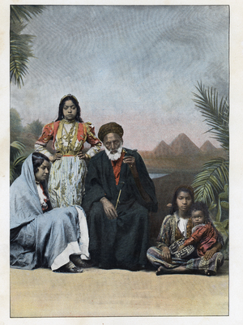

household, family [οικος, οικια]

| ⲙⲉⲥϩⲛⲏⲓ, ⲙⲉⲥϧⲉⲛⲏⲓ SB | (noun)born in the house [οικογενης]297 | Crum: 66a | |||||||
| ⲣⲙⲛⲏⲓ,
ⲣⲉⲙⲛⲏⲓ SABF
ⲣⲙⲏⲓ S ⲣⲉⲙϧⲉⲛⲏⲓ B |
(noun
male/female)member of household, domestic, kinsman [οικειος]
monastic superintendent, warden298 |
Crum: 66b | |||||||
| ⲣ ⲣⲙⲛⲏⲓ, ⲟ ⲛⲣⲙⲛⲏⲓ S | be akin299 | ||||||||
| ϫⲙⲛⲏⲓ A | (noun)roof [δωμα]300 | ||||||||
ⲏⲓ SABFO, ⲏⲉⲓ SAA2, (for ⲉ-, ⲓ- ? v AZ 25 115 n, ib 27 108), pl ⲏⲟⲩ ABF (S J 12 22 prob for ⲏⲓ) & sg as pl, nn m, a. house: Deu 5 6 SB, Pro 1 13 SAB, Is 31 2 SBF, Jo 2 16 SA2B οἶκος; Job 4 19 SB, Ps 48 12 SB οἰκία; Sa 13 15 S οἴκημα; Ps 108 10 S (B ⲙⲁ ⲛϣⲱⲡⲓ) οἰκόπεδον; Sa 17 4 S μυχός; ib 17 2 S ὄροφος; Job 11 14 B (S ⲙⲁ ⲛⲟⲩⲱϩ) δίαιτα; C 89 71 B (S ⲙⲁ ⲛϣⲱⲡⲉ) σκηνή; Jer 39 2, 8, ib 44 21 B αὐλή; BSM 39 B, AP 19 A2, AZ 21 100 O ⲁⲛⲓⲛⲓ ⲛⲙⲟⲥ ⲛⲛⲏⲓ ⲛⲛⲓⲙ, J 58 9 S ⲡⲁⲏⲓ ⲛⲃⲣⲣⲉ; ⲏⲟⲩ Nu 24 5 B, Deu 5 30 B (S ⲙⲁ ⲛϣⲱⲡⲉ), Ez 16 41 B, Nah 2 6 A (B diff), Mk 12 40 F (B ⲏⲓ), Va 57 247 B; part of house ⲙⲉⲣⲟⲥ ⲛⲏⲓ sold or inherited: J 35, 74, BM 1017, CO 132, 145, quarter of house: J 13, 20, half: J 21, 44, Ryl 171. b. household, family: Ge 7 1 B (S ⲛⲁⲡⲉⲕⲏⲓ), Nu 1 4 SB, Ps 114 6 (113 17) SB οἶκος; Jo 4 53 SA2B οἰκία; C 43 21 B ⲉⲕⲉⲥⲙⲟⲩ ⲉⲣⲟϥ ⲛⲉⲙⲡⲉϥⲏⲓ ⲧⲏⲣϥ, CO 265 S ⲡⲉⲕⲏⲓ ⲧⲏⲣϥ men & beasts. ⲏⲟⲩ Ex 6 14 B, ib 12 3 B, Nu 26 2 B. With poss art & pron: Lu 9 61 S ⲛⲁⲡⲁⲏⲓ (= B ⲛⲏ ⲉⲧϧⲉⲛⲡⲁⲏⲓ) οἶκος; Mk 6 4 S ⲛⲁⲡⲉϥⲏⲓ (B ⲡⲉϥⲏⲓ) οἰκία; CA 105 S sim, C 89 61 B ⲛⲧⲁϫⲉⲙ ⲡϣⲓⲛⲓ ⲛⲛⲁⲡⲁⲏⲓ = Miss 4 546 S ⲛⲁⲣⲱⲙⲉ.
ⲙⲉⲥϩⲛ-, ϧⲉⲛⲏⲓ SB nn, born in the house: Ge 15 2 SB, Jer 2 14 B οἰκογενής; Mor 43 258 S ⲧⲏⲡⲉ ⲛⲛⲉϥⲙⲉⲥϩⲛⲏⲓ ⲧⲏⲣⲟⲩ…ⲣ ϣⲟ.
ⲣⲙ-, ⲣⲉⲙⲛⲏⲓ SABF, ⲣⲙⲏⲓ S (ShC 73 160 as var), ⲣⲉⲙϧⲉⲛⲏⲓ B nn m & f, a. member of house-hold, domestic, kinsman: Lev 18 17 B ⲣⲉⲙϧⲉⲛⲏⲓ (S ⲣⲱⲙⲉ), Is 31 9 SBF, Am 6 10 AB, Eph 2 19 SB οἰκεῖος; Mt 10 25, ib 36 SB οἰκιακός; Jer 3 4 B οἶκος; BHom 51 S ⲛⲉⲥⲣⲙⲣⲁⲩⲏ ⲙⲛⲛⲉⲥⲣ. οἰκέτης; Nu 9 14 B (S diff) αὐτόχθων; TRit 498 B those she hath left behind ⲛⲉⲙⲛⲉⲥⲣ., J 5 46 & pass S ⲟⲩⲇⲉ ϣⲙⲙⲟ ⲟⲩⲇⲉ ⲣ. f ShC 73 xii S of Virgin ⲧⲣ. ⲛⲛⲁⲅⲅⲉⲗⲟⲥ. b. monastic superintendent, warden (Ladeuze Pachôme 287, dem in Rec 28 196): Miss 4 533 S ⲁϥⲧⲱϣ ⲛϩⲉⲛⲣ. ⲙⲛⲙⲙⲉϩⲥⲛⲁⲩ = C 89 51 B, C 89 26 B the work that ⲡⲓⲣ. bade them οἰκιακός وكيل البيت, C 41 54 B our father assembled ⲛⲓⲛⲓϣϯ ⲛϣⲏⲣⲓ ⲛⲉⲙⲛⲓⲣ., ShC 73 44 S all employed shall be under ⲧⲉⲝⲟⲩⲥⲓⲁ ⲛⲛⲉⲩⲣ., ib 159 ⲛⲣ. var ⲛⲣⲱⲙⲉ ⲙⲡⲏⲓ, Mun 76 S ⲡⲣⲱⲙⲉ ⲙⲡⲏⲓ praepositus domus, cf ib ⲡⲉⲧϩⲙⲡⲏⲓ, Mor 51 38 S Victor ⲡⲣ. of the shoemakers (ⲕⲁⲥⲉ), Wess 18 46 S ⲟⲩⲛⲟϭ ⲛⲣ.ⲡⲉ & all archimandrites, Mor 51 34 sim. f Miss 1 383 S = Osir 41 among nuns.
ⲙⲉⲧⲣⲉⲙϧⲉⲛⲏⲓ B nn f, kinship: Lev 20 19 (S ⲥⲩⲅⲅⲉⲛⲓⲁ) οἰκειότης.
ⲣ ⲣⲙⲛⲏⲓ, ⲟ ⲛⲣ. S, be akin: Lev 18 6 (B diff) gloss ⲉⲧⲉⲥⲩⲅⲅⲉⲛⲏⲥ ⲛⲧⲁϥⲡⲉ οἰκεῖος; BMar 108 ⲉϣⲁⲩⲣ ⲣ. ⲛⲁϥ οἰκειοῦν.
ϫⲙⲡⲏⲓ A nn, roof: Zeph 1 5 δῶμα.
67b
ⲏⲟⲩ v ⲏⲓ.
| view | ⲣⲁⲓⲧⲉ S ⲣⲉⲓⲧⲉ L ⲣⲉⲉⲓⲧⲉ AL | (noun female) kindred [γενεσις, συνγενεια]1339 |
Homonyms:
| view | ⲏⲓ SB | (noun male) pair, couple [ζευγος]686 |